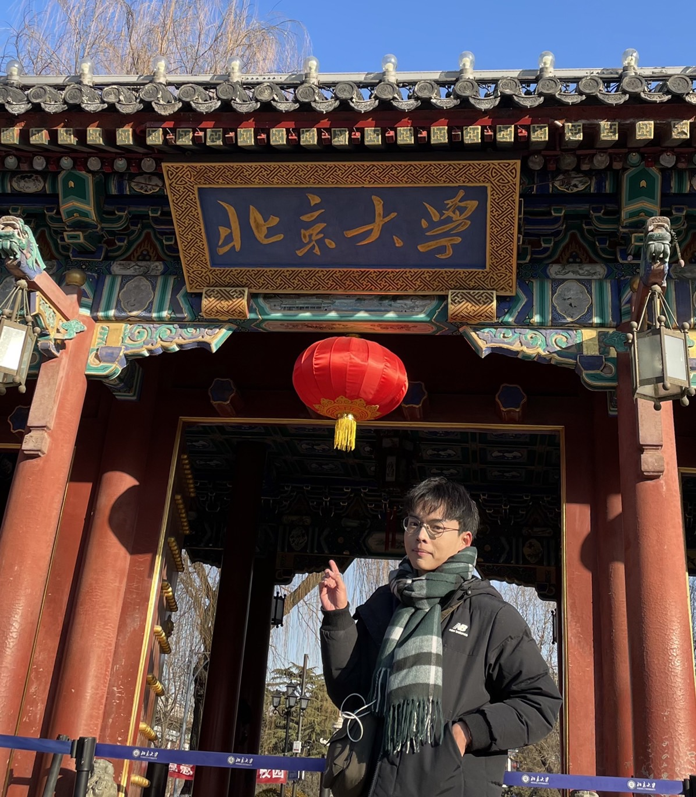

大學期間，我同時修習動力機械與電機工程系。控制系統、IC晶片設計、計算機架構都是 我所擅長的領域。 大五到北京大學交換一學期，修讀資訊工程系，接觸了演算法以及機器學習相關課程，發 現自己對於雲端運算、物聯網應用方面更感興趣，決定朝該領域深入研究。
Bachelor - Power Mechanical Engineering / Electrical Engineering • Sep 2017 - Present
雙專長電機系，主要以電路控制、IC設計為研究方向
Exchange Student - School of Electronics Engineering & Computer Science • Sep 2021 - Jan 2022
1. 機器學習 : 使用Scikit-Learn分析 RF, XGBoost, KNN,
LR模型在心臟疾病預測的表現，平均準確率達86%。
2. 資料結構 : C++實作Graph, Hash Set,
Heap等資料結構；應用並查集、樹狀數組、Trie架構提升演算效率。
3. 演算法 : C實作Depth First
Search(DFS)結合動態規劃，完成地圖路徑搜尋專案。
Gallant Precision Machining Co. Ltd • Apr 2018 - Jan 2020
1. C# : 基於 Math.NET, ScottPlot
等套件開發自動頻譜轉換程式。以Windows
Form顯示即時更新數據、調整介面。
2. SQL & Visualization :
以System.Thead控制SQL資料庫推送，並回傳馬達震動數據做即時運算，視覺化頻譜圖。
3. Git :
版本控制開發專案，篩選異常資料點，維護並分析健康診斷訓練模型。